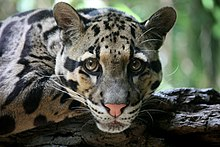
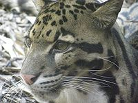
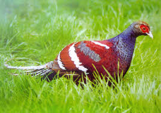
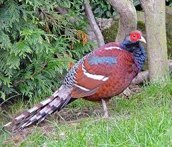
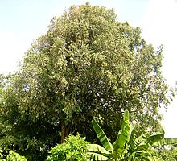
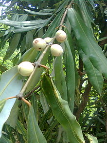

State Animal:
Clouded Leopard


The clouded leopard (Neofelis nebulosa) is a medium-sized wild cat occurring from the Himalayan foothills
State Bird:
Hill Myna


Two subspecies are named from these places; one is Syrmaticus humiae humiae in the hills of Manipur.
State Tree:
Indian Rose Chestnut


This slow-growing tree is named after the heaviness and hardness of its timber.